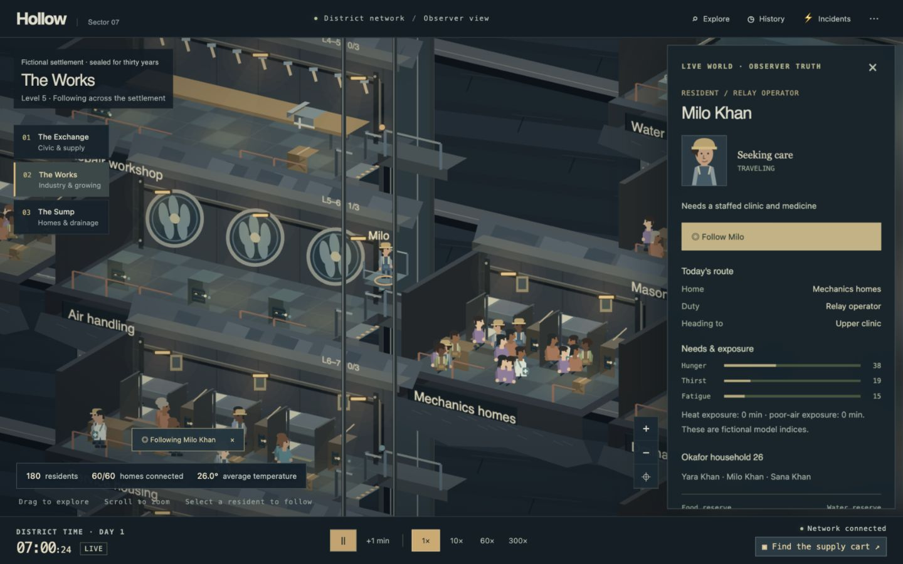
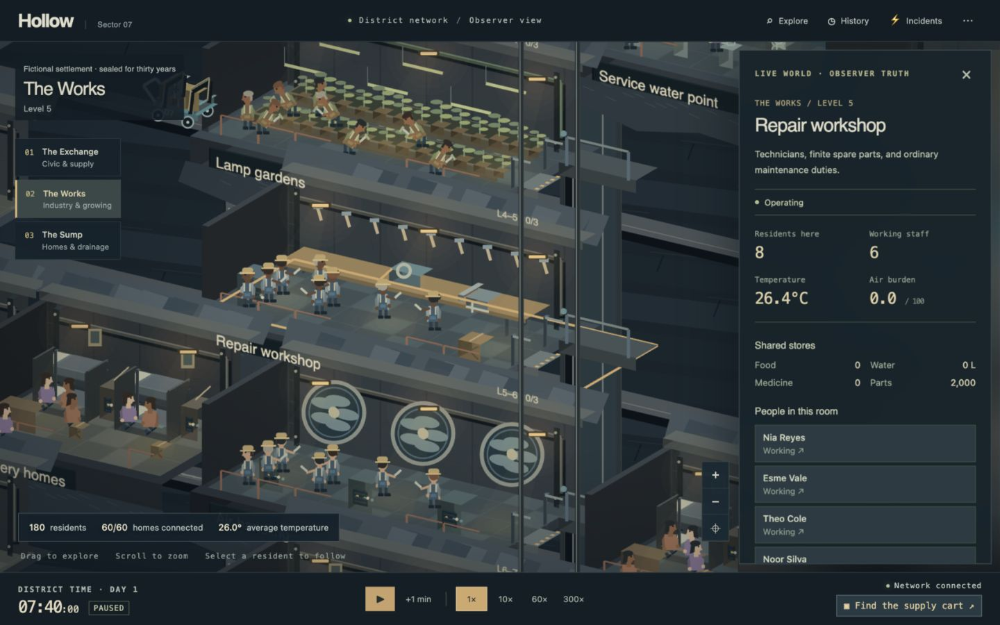
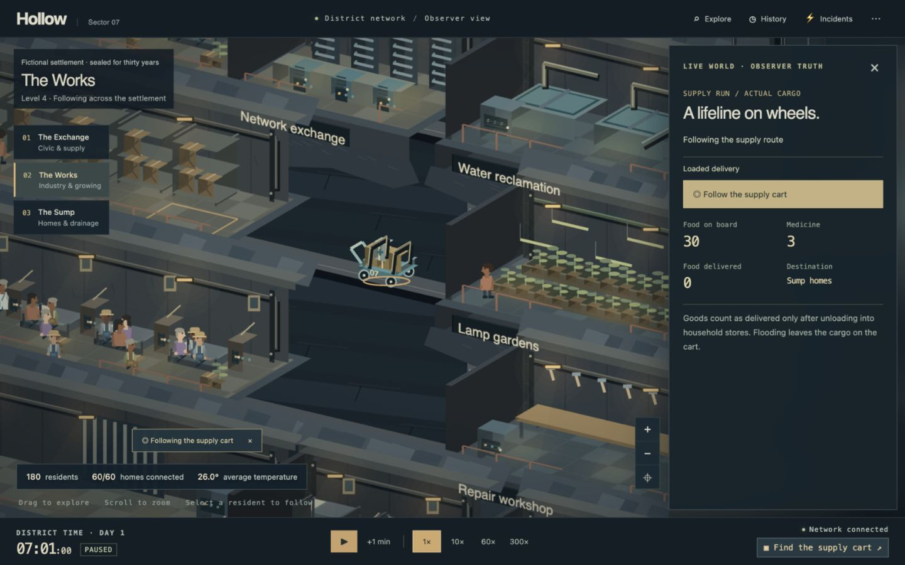
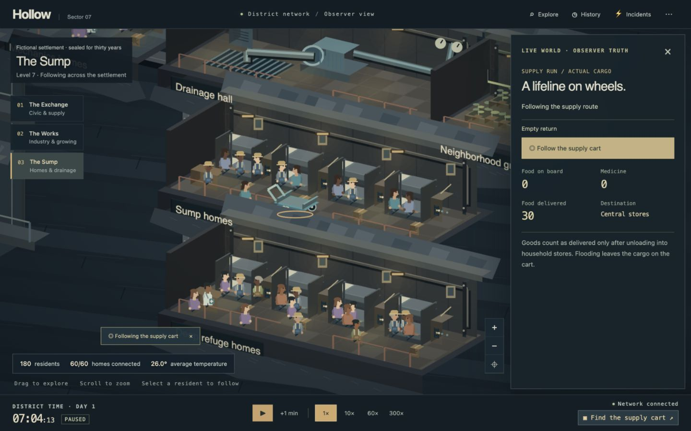
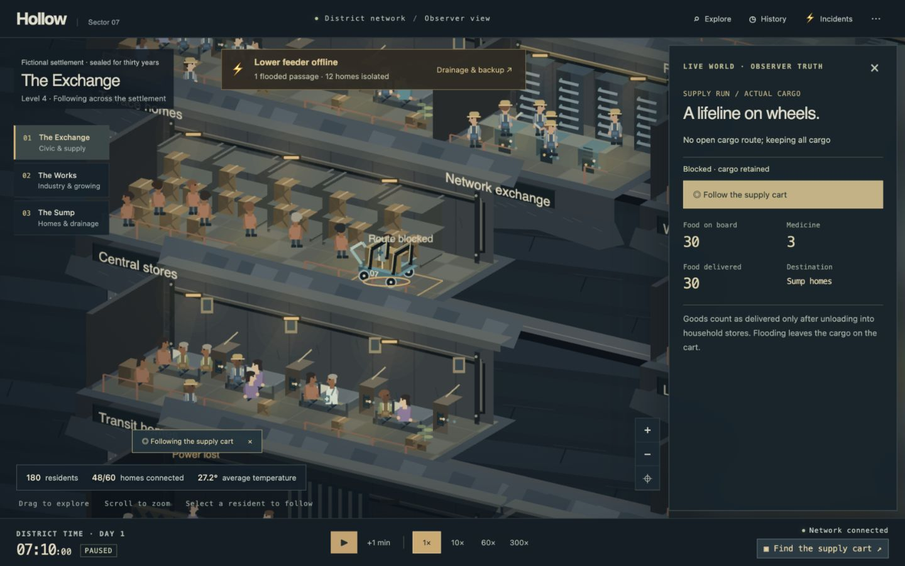
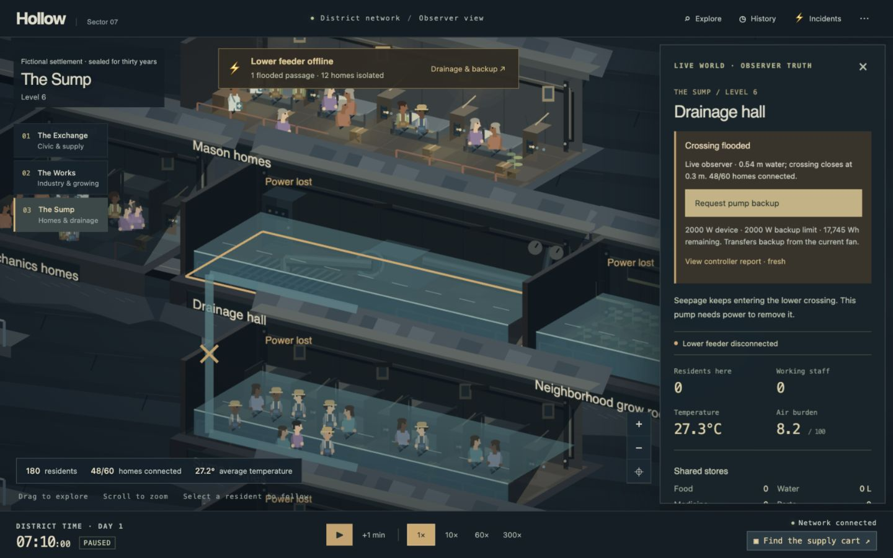

Live React + PixiJS · authentic production screenshots · Verification notes

Same world footprint for landings, posts and rider.

Growers at beds; technicians at the workbench.

30 food and 3 medicine secured on the fleet cart.

Exposed deck after 30 food units are delivered.

Cargo remains onboard when the route is flooded.

48/60 homes connected, with the applicable action at the top.
14-second clip assembled from authentic screenshots, sampled every two seconds. No generated or interpolated frames.
1920 × 1080 sequence · Recorded clock and level labels
Latest paired measurements: both builds presented at 60 FPS at both sizes and speeds, with no frames over 33.34 ms. Earlier samples reached 99.6–120 FPS; presentation cadence varied during the session. See the notes for method and limits.